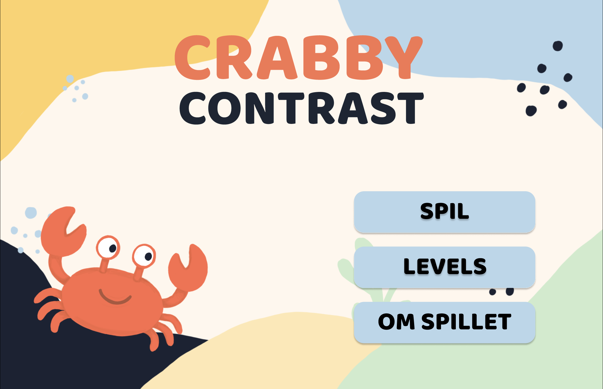

Crabby Contrast
Crabby Contrast is an interactive learning game designed to teach the basics of color contrast through simple explanations and hands-on challenges.
Links
- Website: [Link til projektets website]
- Figma: [Link til dit Figma-design]
- GitHub: [Link til projektets kode]

Tools
- Figma
- Photoshop
- HTML
- CSS
- JavaScript
Opgaven
På 1. semester har du arbejdet med grundlæggende metoder og teknologier inden for multimediedesign, herunder frontend, UI, UX, visuel formidling, målgrupper, indhold og proces.
I denne prøve tager du udgangspunkt i dine egne erfaringer fra semesteret. Opgaven handler om at omsætte faglig viden til en digital løsning, der giver et sammenhængende forløb for en bruger.
Opgaven har en spil-tonet retning. Du må bruge progression, valg, feedback, små udfordringer, levels eller visuelle universer, hvis det styrker formidlingen. Det er ikke et krav at udvikle et spil. Du skal vælge et emne fra 1. semester, formidle det i øjenhøjde og arbejde med indlæring på en måde, hvor brugeren gennem handling får en grundlæggende forståelse af emnet.
Educational game · 1. semester · Individual project
Focuspoints
- UI/UX Design — Creating a simple and intuitive game interface.
- Game Design — Designing levels, progression, feedback and interactive challenges.
- Visual Identity — Developing the color palette, typography, illustrations and the Crabby mascot.
- Color Theory & Contrast — Turning color and contrast theory into practical, interactive exercises.
- Accessibility — Focusing on readability, color contrast and WCAG principles.
- HTML & CSS — Building and styling the game interface.
- JavaScript — Creating interactions, quizzes and feedback throughout the game.
- User Testing — Testing and evaluating the usability and clarity of the game and its challenges.
Målgruppen
Opgivet:
Målgruppen er nye studerende eller begyndere på multimediedesignuddannelsen.
Min uddybning:
- Primær målgruppe
- Nye studerende på multimediedesign, der ønsker at forstå kontrastfarver fra første gang på studiet.
- Alder
- 18–30.
- Genre
- Interaktivt spil, læringsspil og visuel læring.
- Stil
- Farverig og simpel visuel stil med humoristiske elementer og fokus på tydelig feedback.
- Gameplay
- Interaktive opgaver, hvor spilleren lærer om kontrastfarver gennem små udfordringer og visuelle problemstillinger.
- Teknologi-erfaring
- Har typisk erfaring med digitale platforme og computere i hverdagen.
- Motivation
- At lære gennem praksis frem for teori, modtage hurtig og tydelig feedback og udvikle forståelse for UI/UX og accessibility.